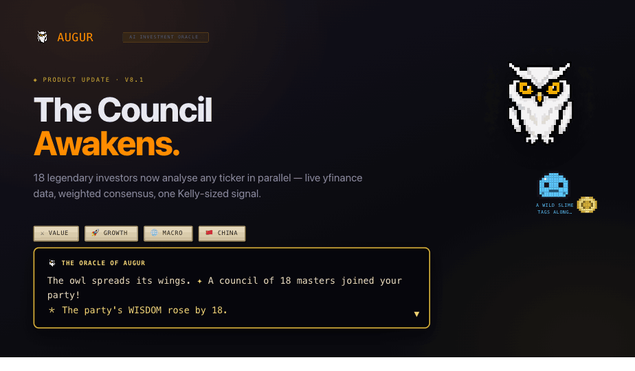
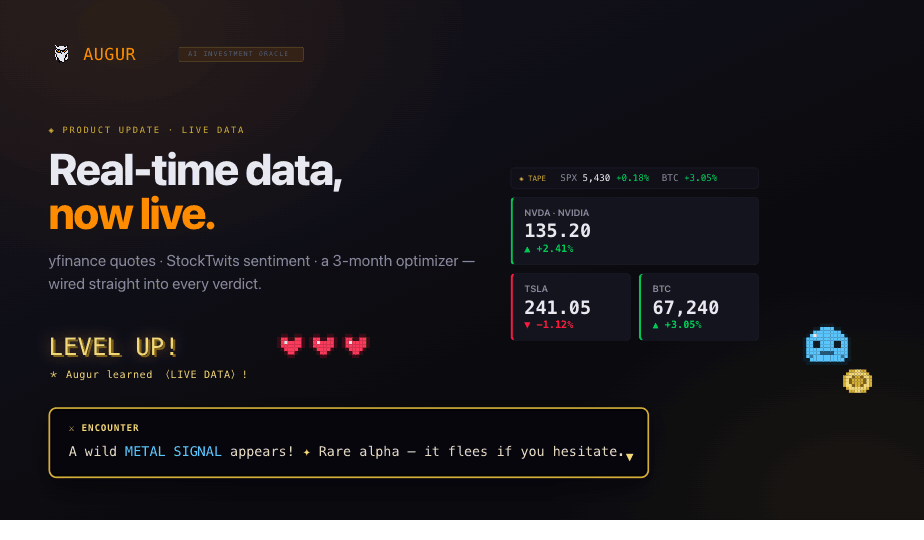
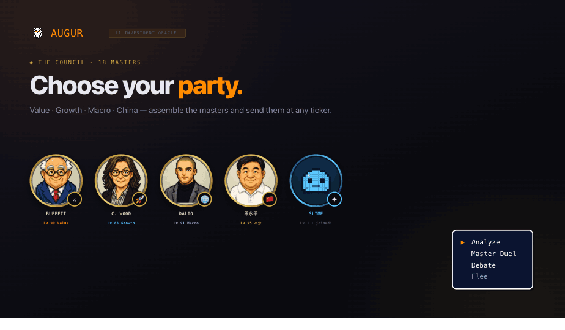
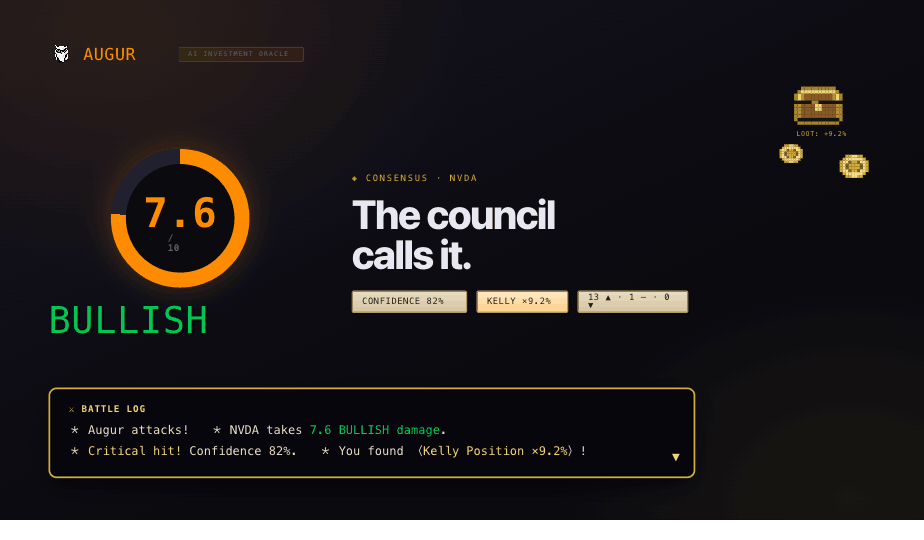
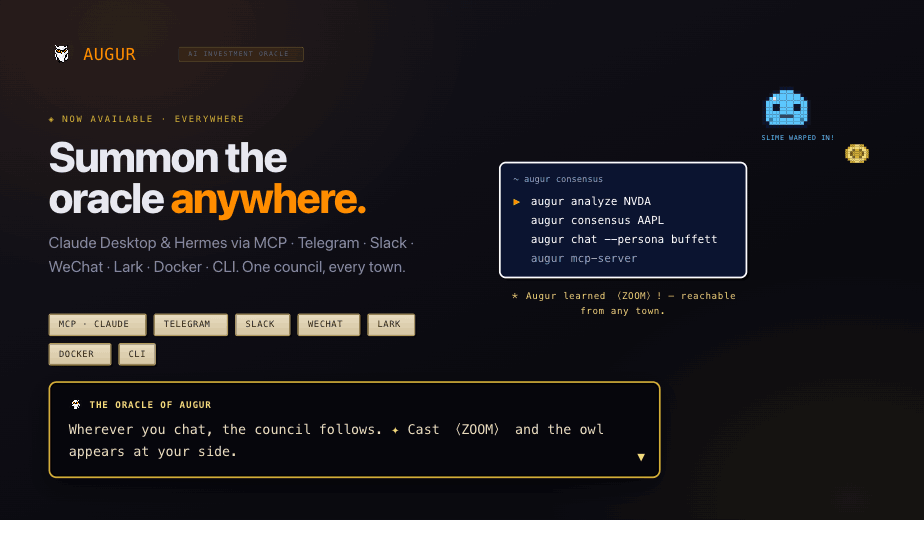

◈ Social Kit · X / Twitter
Product-update promo cards
Five 16:9 announcement cards in the Augur terminal look, each hiding a pixel Dragon-Quest-style easter egg — party formation, LEVEL UP!, encounters, critical hits, a teleport spell & a slime that keeps tagging along.





▸ Quick-share PNGs are in promo/exports/. For pixel-perfect 1600×900, open the matching NN-*.html in promo/ full-screen — the frames are native 1600×900 and fully editable (change copy, swap the ticker, re-export). Easter eggs are original pixel art (genre homage), not Square Enix assets.